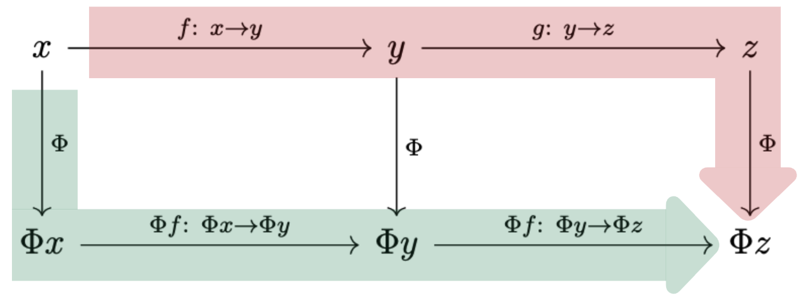
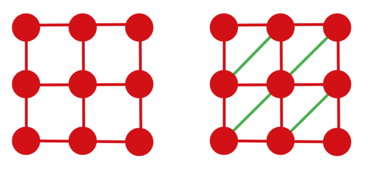

Functoriality and Triangulation
Why the computational pipeline preserves structure
The earlier chapters describe a pipeline:
\[ \text{complex} \longrightarrow \text{chain complex} \longrightarrow \text{homology}. \]
Category theory explains why this pipeline respects maps, compositions, and filtrations rather than merely assigning isolated outputs (Nanda 2023).
The computational course is complete without this material. The purpose here is to show that the maps used throughout the notes fit together coherently and that the cubical theory connects to the standard simplicial theory.
If category theory is new, read “object” as a mathematical structure and “morphism” as an allowed structure-preserving map. The essential dictionary is:
| Geometry | Algebra |
|---|---|
| cubical complex \(K\) | chain complex \(C_\bullet(K)\) |
| cubical map \(f\) | chain map \(C_\bullet(f)\) |
| inclusion \(K_s\hookrightarrow K_t\) | homology map \(H_k(K_s)\to H_k(K_t)\) |
| filtration | persistence module |
The abstraction packages this entire table into functors. It does not alter the homology computations already performed.
1 Categories and functors
Definition 1 (Category and functor) A category \(\mathcal C\) consists of:
- a collection of objects;
- for every pair \(X,Y\), a collection \(\mathcal C(X,Y)\) of morphisms \(f\colon X\to Y\);
- associative composition \(\mathcal C(X,Y)\times\mathcal C(Y,Z)\to\mathcal C(X,Z)\); and
- an identity morphism \(\operatorname{id}_X\) for every object, satisfying \(f\circ\operatorname{id}_X=f=\operatorname{id}_Y\circ f\).
Relevant examples include:
- \(\mathbf{CubeCx}\): cubical complexes and cubical maps;
- \(\mathbf{SimpCx}\): simplicial complexes and simplicial maps;
- \(\mathbf{ChainCx}\): chain complexes and chain maps;
- \(\mathbf{Vect}_{\mathbb F_2}\): vector spaces and linear maps.
A functor \(F\colon\mathcal C\to\mathcal D\) maps objects to objects and morphisms to morphisms while preserving identities and composition:
\[ F(\operatorname{id}_X)=\operatorname{id}_{F(X)}, \qquad F(g\circ f)=F(g)\circ F(f). \]

The axioms formalise a simple discipline: objects cannot be studied in isolation from the maps between them. In computational topology, the maps are what track a feature from one threshold to the next.
For a familiar example, vector spaces form a category whose morphisms are linear maps. Composing morphisms is ordinary function composition, and the identity matrix represents the identity morphism. Category theory keeps only this pattern and permits the word “vector space” to be replaced by “complex,” “chain complex,” or “persistence module.”
1.1 The poset category
Every partially ordered set \((P,\leq)\) determines a category. Its objects are the elements of \(P\), and there is one morphism \(p\to q\) exactly when \(p\leq q\). Reflexivity supplies identities and transitivity supplies composition.
The filtration index set is such a category. A persistence module is equivalently a functor
\[ V\colon(\mathbb N,\leq)\longrightarrow\mathbf{Vect}_{\mathbb F_2}. \]
This viewpoint explains why all squares involving structure maps must commute: there is only one order morphism \(i\to j\), so every factorisation of it must have the same image under the functor.
2 The chain functor
A cellular map \(f\colon K\to L\) induces linear maps
\[ C_k(f)\colon C_k(K)\to C_k(L). \]
To be a chain map, these must commute with the boundary:
\[ \partial^L_k C_k(f) = C_{k-1}(f)\partial^K_k. \]
This commuting relation is not cosmetic: it is exactly what guarantees that cycles are sent to cycles and boundaries to boundaries.
Proposition 1 (Cubical chains form a functor) With coefficients in \(\mathbb F_2\), a dimension-nonincreasing cubical map \(f\colon K\to L\) induces
\[ C_k(f)(\sigma)= \begin{cases} f(\sigma),&\dim f(\sigma)=k,\\ 0,&\dim f(\sigma)<k, \end{cases} \]
on each basis \(k\)-cube \(\sigma\), extended linearly. These maps form a chain map and define a functor
\[ C_\bullet\colon\mathbf{CubeCx}\longrightarrow\mathbf{ChainCx}. \]
The boundary of a cube is the sum of its facets. Face preservation ensures that the non-degenerate images of those facets are precisely the facets of the image cube; facets collapsed by \(f\) contribute in cancelling pairs over \(\mathbb F_2\). Hence \(\partial C_k(f)=C_{k-1}(f)\partial\) on basis cubes, and therefore on all chains by linearity. The identity map fixes every basis cube, while evaluation on a basis cube shows
\[ C_\bullet(g\circ f)=C_\bullet(g)\circ C_\bullet(f). \]
Thus identities and compositions are preserved. A fully general treatment of cubical maps requires careful handling of degeneracies; the formula above records the mechanism used in the finite cubical setting (Kaczynski et al. 2006).
The two possible routes—map then take the boundary, or take the boundary then map—give the same result.
This equality is often drawn as a commuting square. “Commuting” means that starting with a \(k\)-chain in the upper-left corner and following either route produces exactly the same \((k-1)\)-chain. The diagrammatic language is only a compact way to assert equality of two compositions.
3 The homology functor
Proposition 2 (A chain map induces a homology map) Let \(f_\bullet\colon C_\bullet\to D_\bullet\) be a chain map. Then
\[ H_k(f)\colon H_k(C)\to H_k(D), \qquad [z]\longmapsto[f_k(z)] \]
is a well-defined linear map.
Proof. If \(z\) is a cycle, then \(\partial f_k(z)=f_{k-1}(\partial z)=0\), so \(f_k(z)\) is a cycle. If \(z-z'=\partial c\), then
\[ f_k(z)-f_k(z') =f_k(\partial c) =\partial f_{k+1}(c), \]
so the images differ by a boundary and determine the same homology class. Thus the formula is independent of the representative. Linearity follows from linearity of \(f_k\).
A chain map therefore sends cycles to cycles and boundaries to boundaries. It induces
\[ H_k(f)\colon H_k(K)\to H_k(L), \qquad [z]\longmapsto[C_k(f)(z)]. \]
This assignment preserves identities and compositions, so \(H_k\) is a functor from complexes to vector spaces.
Functoriality is what lets an inclusion
\[ K_s\hookrightarrow K_t \]
produce the linear map
\[ H_k(K_s)\to H_k(K_t) \]
used in a persistence module.
4 Cubes to simplices
The Coxeter–Freudenthal–Kuhn triangulation splits an \(n\)-cube into \(n!\) simplices without introducing new vertices. In two dimensions, it divides a square into two triangles.
For the unit cube \([0,1]^n\), choose a permutation \(\pi\) of \(\{1,\ldots,n\}\). Starting from \(v_0=0\), define
\[ v_k=\sum_{j=1}^k e_{\pi(j)},\qquad 1\leq k\leq n, \]
where \(e_i\) is the \(i\)th coordinate vector. The simplex \([v_0,\ldots,v_n]\) consists of points whose coordinates are ordered according to \(\pi\). Equivalently, after fixing an ordering convention it is described by inequalities of the form
\[ 0\leq x_{\pi(n)}\leq\cdots\leq x_{\pi(1)}\leq1. \]
There are \(n!\) coordinate permutations and hence \(n!\) top-dimensional simplices. Their common faces agree across neighbouring cubes. This global consistency is what an arbitrary, independently chosen diagonal in each cube would fail to guarantee.

For one square, either diagonal would produce a triangulation. Across an image grid, however, the choices cannot be made independently: the subdivisions must agree wherever neighbouring cubes meet. The CFK convention supplies one coherent choice throughout the lattice.

Proposition 3 (Triangulation is a chain map) The triangulation map
\[ \mathbb T\colon C_\bullet^\square(K) \to C_\bullet^\triangle(K^\triangle) \]
commutes with boundary:
\[ \partial^\triangle\mathbb T = \mathbb T\partial^\square. \]
Let a square have vertices \(v_{00},v_{10},v_{01},v_{11}\) and triangulate it along the diagonal \([v_{00},v_{11}]\). Then
\[ \mathbb T(\kappa) =[v_{00},v_{10},v_{11}]+[v_{00},v_{01},v_{11}]. \]
Taking the simplicial boundary produces the four outer edges and two copies of the diagonal. The diagonal cancels over \(\mathbb F_2\), leaving precisely the triangulation of the four cubical boundary edges. Hence \(\partial^\triangle\mathbb T(\kappa)=\mathbb T\partial^\square(\kappa)\). The identity is immediate on vertices and edges and extends linearly.
In dimension \(n\), the Coxeter–Freudenthal–Kuhn triangulation indexes the \(n!\) simplices by coordinate permutations; internal facets occur in pairs and cancel, while boundary facets reproduce the triangulated cubical boundary (Kaczynski et al. 2006).
Theorem 1 (Triangulation preserves homology) Consequently,
\[ H_k^\square(K)\cong H_k^\triangle(K^\triangle). \]
Triangulation changes the cell decomposition without changing the underlying topological space.
The chain-map identity above gives maps on homology. The cubical complex and its CFK triangulation have the same geometric realisation, and the triangulation map has a chain-homotopy inverse obtained by grouping the simplices back into their parent cubes. Chain-homotopic composites induce the identity on homology, so the induced homology maps are isomorphisms.
Theorem 2 (CFK triangulation is functorial) On cubical complexes and cubical maps that respect the lattice order, the assignments
\[ K\longmapsto K^\triangle, \qquad f\longmapsto f^\triangle \]
define a functor \(\mathbb T\colon\mathbf{CubeCx}\to\mathbf{SimpCx}\).
The vertices of every CFK simplex form an inclusion chain in the coordinate order. An order-preserving cubical map sends such a chain to another chain, possibly with repeated vertices. Removing repetitions leaves a simplex of \(L^\triangle\), so the vertex map extends to a simplicial map \(f^\triangle\). The identity cubical map gives the identity vertex map. For composable maps \(f\) and \(g\), both \((g\circ f)^\triangle\) and \(g^\triangle\circ f^\triangle\) agree on every vertex. A simplicial map is determined by its vertex values, so the two maps are equal. Thus identities and compositions are preserved.
5 Filtered functors
A filtered cubical complex is not only a sequence
\[ K_0\subseteq K_1\subseteq\cdots. \]
It is a functor from its ordered index set to \(\mathbf{CubeCx}\). A morphism between filtered complexes is a family of cubical maps \(f_t\colon K_t\to L_t\) satisfying
\[ f_u\circ\iota^K_{t,u} = \iota^L_{t,u}\circ f_t \qquad(t\leq u). \]
This equation says that mapping at threshold \(t\) and then including gives the same result as first including and then mapping at threshold \(u\).
Applying triangulation, chains, and homology at every index gives functors
\[ \mathbf{CubeFilt} \longrightarrow \mathbf{SimpFilt} \longrightarrow \mathbf{ChainFilt} \longrightarrow \mathbf{PersMod}. \]
Here \(\mathbf{ChainFilt}\) contains filtered chain complexes and compatible chain maps, while \(\mathbf{PersMod}\) contains persistence modules and module morphisms. Their composition is the persistent-homology functor
\[ \operatorname{PH}_k =H_k^{\mathrm{filt}}\circ C_\bullet^{\mathrm{filt}} \circ\mathbb T^{\mathrm{filt}}. \]
It preserves every commuting square needed to follow a class through the entire filtration. This is the formal chain of custody from a pixel threshold to a persistent homology class.
Each column is one mathematical representation of the same input. The dashed vertical arrows indicate the passage from a static object to its filtration-level counterpart; the horizontal arrows are the functors that carry structure from one representation to the next.
6 Functorial stability
Theorem 3 (Functorial route to algebraic stability) Suppose
\[ \lVert I-J\rVert_\infty\leq k. \]
Then the associated persistence modules are \(k\)-interleaved, and their persistence diagrams satisfy
\[ d_B\bigl( \operatorname{Dgm}(I), \operatorname{Dgm}(J) \bigr) \leq k. \]
Proof. For every cell \(\sigma\), \(I(\sigma)\leq J(\sigma)+k\) and \(J(\sigma)\leq I(\sigma)+k\). Therefore
Then the sublevel complexes satisfy shifted inclusions
\[ K_t(I)\subseteq K_{t+k}(J), \qquad K_t(J)\subseteq K_{t+k}(I). \]
Denote these inclusions by \(\alpha_t\) and \(\beta_t\). Inclusion maps compose transitively, so
\[ \beta_{t+k}\circ\alpha_t =\iota^I_{t,t+2k}, \qquad \alpha_{t+k}\circ\beta_t =\iota^J_{t,t+2k}. \]
The persistent-homology functor preserves compositions. Hence \(\operatorname{PH}_k(\alpha_t)\) and \(\operatorname{PH}_k(\beta_t)\) obey the same two equations in \(\mathbf{PersMod}\) and constitute a \(k\)-interleaving. The algebraic isometry theorem identifies interleaving distance with bottleneck distance for the finite, pointwise finite-dimensional modules considered here. Consequently,
\[ d_B\bigl( \operatorname{Dgm}(I), \operatorname{Dgm}(J) \bigr) \leq k. \]
The argument is powerful because each layer has one responsibility:
- the intensity bound creates shifted inclusions;
- functoriality carries inclusions into algebra;
- interleavings measure the shift; and
- the isometry theorem converts it into diagram distance.
7 Why keep this chapter advanced?
Categories are not required to compute a boundary matrix or read a barcode. They become valuable when we want to prove that an entire multi-stage pipeline is coherent.
For a first reading, it is enough to retain the principle:
Structure-preserving maps remain structure-preserving after passing from geometry to chains, homology, and persistence.
Functoriality is disciplined bookkeeping with mathematical force. It ensures that inclusions and transformations are not forgotten when geometry is converted into algebra. Triangulation then permits cubical image complexes to use results developed in the more flexible simplicial setting, without changing their homology.